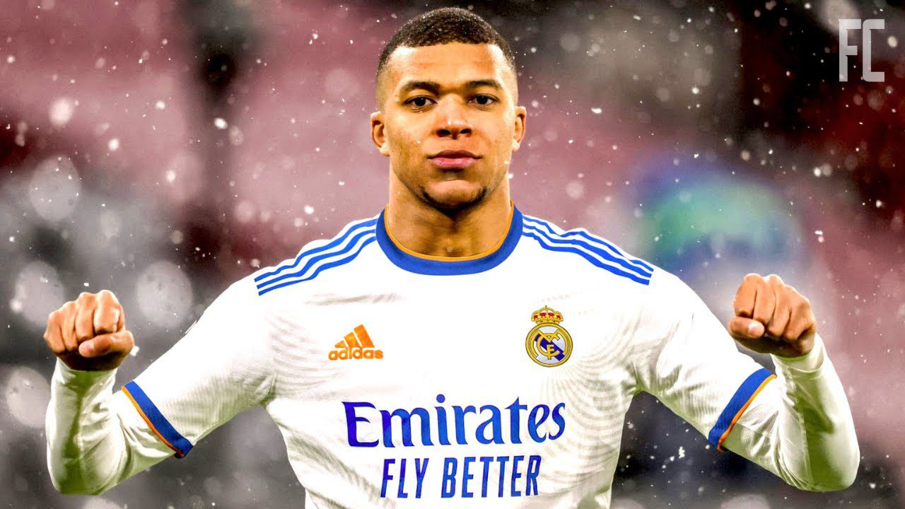
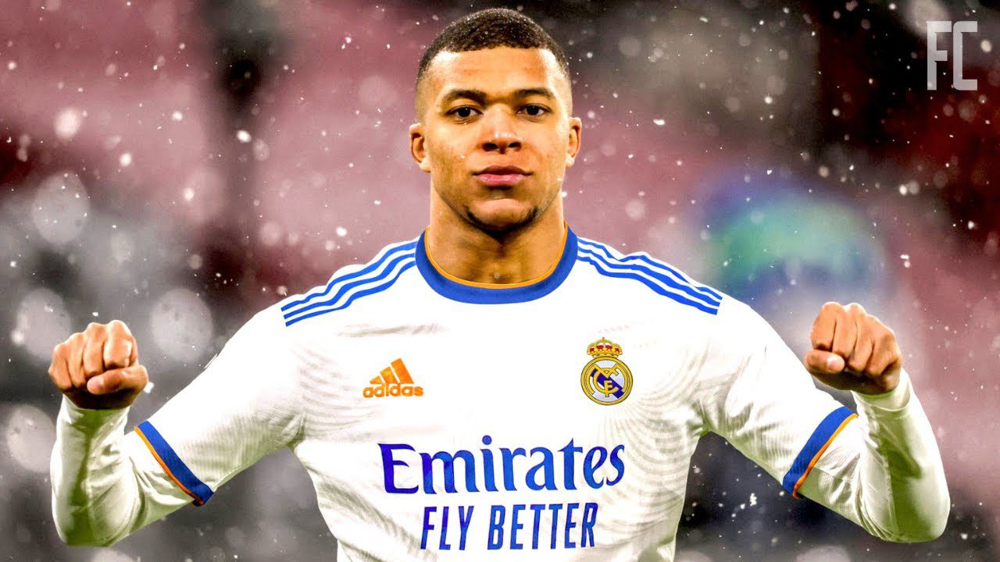
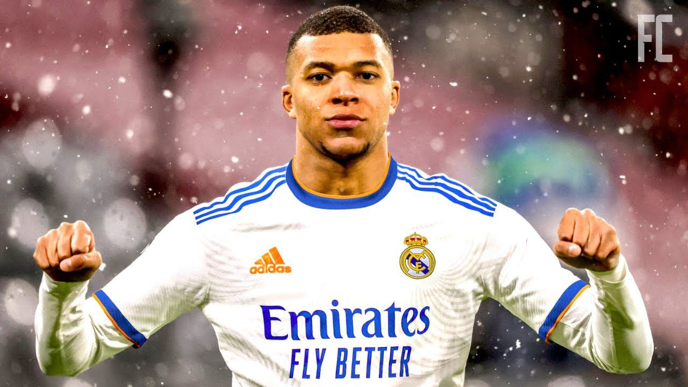

Le Paris Saint-Germain, couramment abrégé en Paris SG ou PSG, est un club de football français, fondé en 1970. Il s'agit du club le plus titré en France avec de nombreux trophées nationaux et internationaux.
Explorez notre site pour découvrir les dernières actualités, l'histoire riche du club, et n'hésitez pas à nous contacter pour toute information supplémentaire.
Le Paris Saint-Germain, souvent désigné sous le nom de PSG, incarne la quintessence du football français et l'éclat de la scène européenne. Fondé en 1970, le club a rapidement évolué pour devenir l'une des forces dominantes du football mondial. Portant les couleurs vibrantes du bleu, du rouge et du blanc, le PSG a acquis une réputation pour son style de jeu flamboyant et son engagement envers l'excellence. Avec un palmarès impressionnant comprenant de multiples titres de championnat de France, le club parisien a également marqué l'histoire en réalisant des transferts de joueurs emblématiques et en s'alignant avec certaines des plus grandes stars du football. Propulsé par des investissements ambitieux et une vision stratégique, le PSG est devenu un phare pour les passionnés du ballon rond à travers le monde, symbolisant à la fois le glamour de Paris et la puissance du sport de haut niveau.
Le Paris Saint-Germain, couramment abrégé en Paris SG ou PSG, est un club de football français, fondé en 1970. Il s'agit du club le plus titré en France avec de nombreux trophées nationaux et internationaux.
Explorez notre site pour découvrir les dernières actualités, l'histoire riche du club, et n'hésitez pas à nous contacter pour toute information supplémentaire.
. Kylian Mbappé, né le 20 décembre 1998 à Bondy, en France, est un prodige du football qui a rapidement gravé son nom dans l'histoire du sport. Dès son plus jeune âge, son talent était évident, et il a été repéré par le centre de formation de l'AS Monaco. Mbappé a fait ses débuts en équipe première à seulement 16 ans, devenant le plus jeune joueur à marquer pour le club. Sa montée en puissance a été phénoménale : il a joué un rôle crucial dans la conquête du titre de champion de France par Monaco en 2017, ainsi que dans leur parcours jusqu'en demi-finale de la Ligue des champions cette même année. Sa notoriété a continué de croître, et en 2017, il a rejoint le Paris Saint-Germain (PSG) dans le cadre d'un transfert record. Au PSG, il a continué à briller, devenant l'un des attaquants les plus redoutables au monde. Avec son rythme électrisant, sa technique exceptionnelle et sa capacité à marquer des buts décisifs, Mbappé est rapidement devenu une figure emblématique du football mondial. Sur la scène internationale, Mbappé a également fait sensation. Il a été un membre clé de l'équipe de France qui a remporté la Coupe du Monde de la FIFA en 2018, marquant notamment en finale contre la Croatie. Sa jeunesse, sa détermination et son talent exceptionnel ont fait de lui l'un des joueurs les plus en vue et les plus prometteurs de sa génération, et il continue de repousser les limites du possible sur les terrains de football du monde entier.
